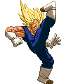
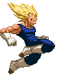
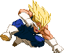
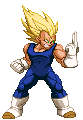

Hyper Dimension Kick
Majin Vegeta's default standing strong kick takes a bit getting used to.
For starters, it is impossible to chain into specials or supers with it;
for that you'll have to rely on his standing Strong punch instead.
The Strong kick lets Vegeta perform a jumping spin kick;
he's invulnerable on the lower half of his body during the start-up.
The move works really well against the Saibamen.


Double Axe Kick
Good combo move, this can chain into specials and supers. It hits twice; once when Vegeta's leg goes up and another time when he axe kicks it back down.


Uppercut (launcher)
Main tool for launching enemies into the air after which you can pursue them (by pressing Up) with an aircombo.


Smash Kick Combo
Vegeta can follow up his crouching Strong Kick with a knock-away kick.



Extended Jumping Weak Kick
You're able to hold down the knee kick, so it remains able to hit an opponent
all the way until Vegeta lands, based off how jumping Light attacks worked in SF2.



Jumping Medium Punch chain
Air combo extender.

Big Smash (bounce-juggles)
Main tool for smashing opponents down to the ground during an aircombo. If an aerial opponent is hit by this move, they'll
fly to the ground and bounce up upon impact, allowing for a juggle combo.

Piston Kick (bounce-juggles)
Main tool for smashing opponents down to the ground during an aircombo. If an aerial opponent is hit by this move, they'll
fly to the ground and bounce up upon impact, allowing for a juggle combo.

Stomp Kick
A little death from above. Opponents will get smashed down hard when hit by the Stomp Kick, while Vegeta dismounts with a backflip.
There is a short delay before the Stomp Kick once inputted, freezing Vegeta in place in air, which can be useful for evading certain things. Combo ender.


Backdash Elbow
Alternate dashing elbow attack. After performing the backflip backdash,
Vegeta dashes forward with the elbow attack,
which can be chained into standing/crouching medium attacks,
making it a pretty sweet combo starter. Can be chained into from his Focus Attack;
as soon as the Focus hits,
input the b,b+SP and Vegeta performs the move,
albeit a slightly alternate version; doing a smaller hop instead of the backflip.

Sliding Kick
A low dashing attack that can catch the opponent off guard as Vegeta runs to them. Trips the opponent's legs and sends them a bit into the air, allowing some juggling.
Can be chained into from his Focus Attack, as with nearly all 'running' attacks.
Sliding Kick Combo
Unique to Majin Vegeta compared to Normal Vegeta, Majin can turn his Sliding Kick into the Sliding Kick Combo,
losely based of the special move by the same name from Hyper Dimension. You'll need to keep a short delay before inputting the buttons for the follow-up kicks,
as otherwise you're likely to whiff with them. Time them with the opponent falling back down.



Bakuhatsuha (burns)
Majin Vegeta ditches his regular Ki Blasts in favour of a toned down version of his Bakuhatsuha super move he used as Normal Vegeta.
The explosion needs to be blocked low, sets p2 aflame and knocks them away.
While it may seem like he is less likely to hold his own in non-Super fireball battles, these explosions detonate high enough to collide and thus cancel incoming enemy Ki Blasts.
The strength of the punch button used to activate the move with determines the distance at which the explosion is set off. Weak is near, medium a bit farther and strong reaches across half the screen.
The EX version extremely useful and is one of the coolest moves in his arsenal, creating three explosions in a row (basically the LP, MP and SP versions in a chain)!
For balancing reasons, the Bakuhatsuha comes with a limiter: after a succesful hit, the enemy is set on flames and you won't be able to perform another Bakuhatsuha until that flame dissipates (this lasts about 2 seconds).
The move is a combo ender; it doesn't chain into any of his Super moves. It's not a great combo tool in general and is used more for pressuring at a distance.

Royal Fist
Vegeta really needed a meaty punch move, so here it is. The Royal Fist comes out as a gut punch, very close range with weak punch input, and covering about 2 character-lengths with strong punch input.
Medium, as usual, is somewhere inbetween. When it connects, he'll throw out an overhead punch and then a final strong straight punch that knocks the opponent away.
This can be super-cancelled into Royal Edict anytime before the 3rd punch comes out.
EX version is the Bull's Eye Buster. After the last punch of the Buster, you can continue with a combo attack.

Suprise Elbow
Vegeta has some tricks up his sleeves with this elusive dashing elbow attack.
Your go-to pressure move. Strength and speed depend on the button pressed;
The Weak version goes forward instantly, but it doesn't knock the opponent out, leaving you vulnerable. You can however Supercancel this version (and this version alone) into the Photon Bomb or Royal Edict once it connects or, uniquely, repeat it up to 4 times if it is blocked. The Medium version has Vegeta dashing backwards, then forward again with his elbow sticking out, knocking the opponent down upon impact.
The Strong version also has Vegeta dashing back and then forward (and farther then the Medium version) but it knocks the opponent away harder and has them bouncing off the wall if they're close enough to it, allowing you to perform a juggle combo. You can cancel the Medium and Strong versions by pressing two kick buttons simultaneously before moving forward (though you have to be real swift with the input); useful as a quick alternate backdash retreat.
EX version has Vegeta dashing forward while being invulnerable, passing by the opponent (while temporarly freezing them in place) and then elbowing them in the back, sending them away hard, wall-bouncing if they're close enough to it. This attack can be blocked by the opponent if they're ready for it.
Your go-to pressure move. Strength and speed depend on the button pressed;
The Weak version goes forward instantly, but it doesn't knock the opponent out, leaving you vulnerable. You can however Supercancel this version (and this version alone) into the Photon Bomb or Royal Edict once it connects or, uniquely, repeat it up to 4 times if it is blocked. The Medium version has Vegeta dashing backwards, then forward again with his elbow sticking out, knocking the opponent down upon impact.
The Strong version also has Vegeta dashing back and then forward (and farther then the Medium version) but it knocks the opponent away harder and has them bouncing off the wall if they're close enough to it, allowing you to perform a juggle combo. You can cancel the Medium and Strong versions by pressing two kick buttons simultaneously before moving forward (though you have to be real swift with the input); useful as a quick alternate backdash retreat.
EX version has Vegeta dashing forward while being invulnerable, passing by the opponent (while temporarly freezing them in place) and then elbowing them in the back, sending them away hard, wall-bouncing if they're close enough to it. This attack can be blocked by the opponent if they're ready for it.


Double Slash Kick
Majin Vegeta's wicked anti-air tool,
based of a special move by the same name he had in Super Butoden 2 and 3.
He dashes diagonally up into the air with a flaming flying kick, knocking the enemy up if he hits with it.
When he reaches the peak of his flying kick, he turns around and instantly dashes right back down with
another flying kick, hitting the opponent in the back of their head and knocking them down.
Weak, Medium and Strong versions all have slightly different arcs; Weak going up at the steepest arc and Strong having the widest arc, covering more ground. The EX version has Vegeta go up and down twice (on the Medium version's flying arc), pinning the opponent in place and knocking them down on the last kick.
Weak, Medium and Strong versions all have slightly different arcs; Weak going up at the steepest arc and Strong having the widest arc, covering more ground. The EX version has Vegeta go up and down twice (on the Medium version's flying arc), pinning the opponent in place and knocking them down on the last kick.